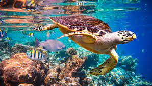

- Endemic to the Philippines.
- Listed as vulnerable because its population is decreasing.
- Thousands were shot weekly during 1980s.
Ref. (Philippine Duck (Anas luzonica) - BirdLife species factsheet. BirdLife.
- Listed as vulnerable because its population is decreasing.
- Thousands were shot weekly during 1980s.
Ref. (Philippine Duck (Anas luzonica) - BirdLife species factsheet. BirdLife.
Philippine Duck (Anas Luzonica)
- Endemic to the Philippines.
- Listed as vulnerable because of Illegal pet trade industry.
- Breeding tarsiers in captivity has been unsuccessful.
Ref. G.(2021, January 3). The Endangered Philippine Tarsier. Greentumble.
- Listed as vulnerable because of Illegal pet trade industry.
- Breeding tarsiers in captivity has been unsuccessful.
Ref. G.(2021, January 3). The Endangered Philippine Tarsier. Greentumble.
Philippine Tarsier (Carlito Syrichta)
- Endemic to the Philippines.
- Critically endangered species. Most threatened crocodile species in the world.
- Estimated population in the wild is fewer than 100.
Ref. CROC: Conservation of the Philippine crocodile. (2014, December 17). Conservation Leadership Programme.
- Critically endangered species. Most threatened crocodile species in the world.
- Estimated population in the wild is fewer than 100.
Ref. CROC: Conservation of the Philippine crocodile. (2014, December 17). Conservation Leadership Programme.
Philippine Crocodile (Crocodylus Mindorensis)
- Listed as vulnerable due to deforeststion.
- Distribution is fragmented or scattered.
- Their habitat is polluted due to mine-tailing of humans in the area.
Ref. Wikipedia contributors. (2021, November 16). Mindanao horned frog. Wikipedia.
- Distribution is fragmented or scattered.
- Their habitat is polluted due to mine-tailing of humans in the area.
Ref. Wikipedia contributors. (2021, November 16). Mindanao horned frog. Wikipedia.
Mindanao Horned Frog (Megophrys Stejnegeri)

- Their colored and patterned shells are highly valuable and sold as "Tortoiseshell" in markets.
- Loss of nesting habitats and coral reefs due to pollution and coastal development.
- Categorized as Critically Endangered due to population deceasing.
Ref. Hawksbill Turtle. (2020, September 30). NOAA.
- Loss of nesting habitats and coral reefs due to pollution and coastal development.
- Categorized as Critically Endangered due to population deceasing.
Ref. Hawksbill Turtle. (2020, September 30). NOAA.
Hawksbill Sea Turtle (Eretmochelys Imbricata)
- Categorized as Near Threatened.
- Heavy deforeststion affected its habitat.
- Harvested for its skin, medical purposes, and as a food.
Ref. King cobra, facts and photos. (n.d.). National Geographic.
- Heavy deforeststion affected its habitat.
- Harvested for its skin, medical purposes, and as a food.
Ref. King cobra, facts and photos. (n.d.). National Geographic.
Philippine Cobra (Naja Philippensis)
- Categorized as Highly Endangered.
- Heavy deforeststion and hunting reduced their population significantly.
- Considered as one of the rarest mammals in the world.
Ref. Visayan Spotted Deer - Arca del Gusto. (2018, December 10). Slow Food Foundation.
- Heavy deforeststion and hunting reduced their population significantly.
- Considered as one of the rarest mammals in the world.
Ref. Visayan Spotted Deer - Arca del Gusto. (2018, December 10). Slow Food Foundation.
Visayan Spotted Deer (Rusa Alfredi)
 - Threatened by habitat loss due to logging and agribusiness..
- Threatened by habitat loss due to logging and agribusiness..
- Hunted for its bushmeat and used for traditional medicine.
- Categorized as Vulnerable.
Ref. Scherer, G. (2018, September 20). What is a binturong? Mongabay Environmental News.
 - Threatened by habitat loss due to logging and agribusiness..
- Threatened by habitat loss due to logging and agribusiness..
- Hunted for its bushmeat and used for traditional medicine.
- Categorized as Vulnerable.
Ref. Scherer, G. (2018, September 20). What is a binturong? Mongabay Environmental News.
Binturong (Arctictis Binturong)